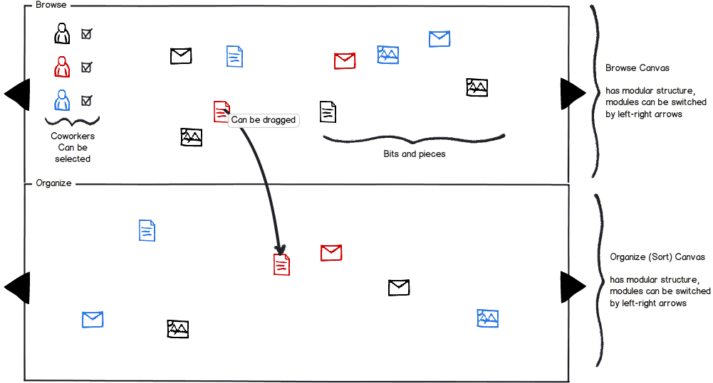
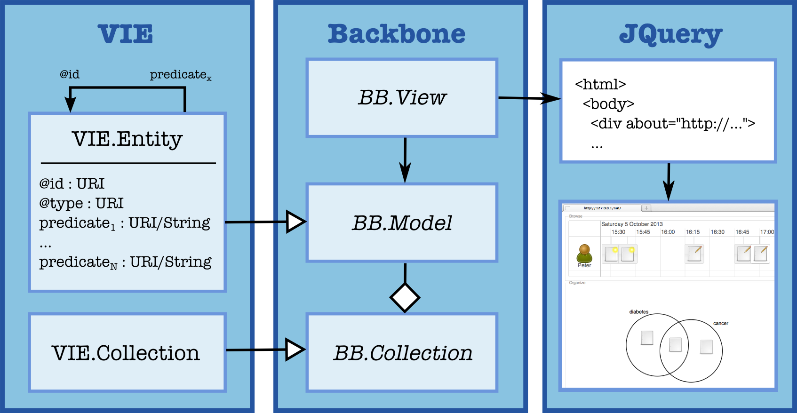
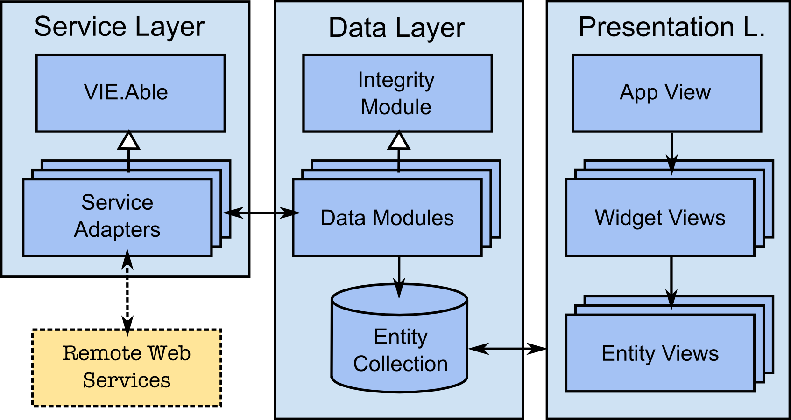
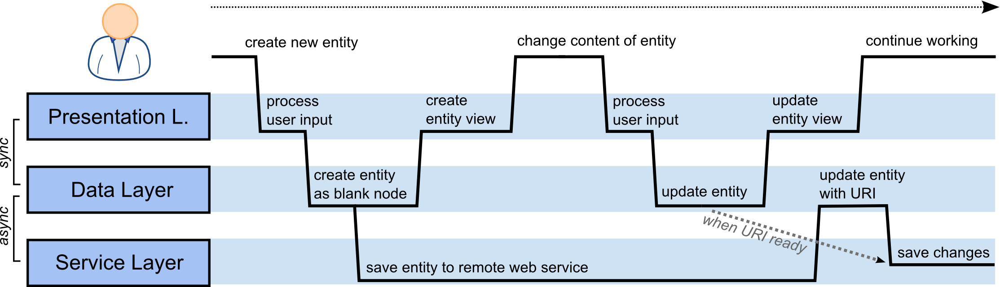
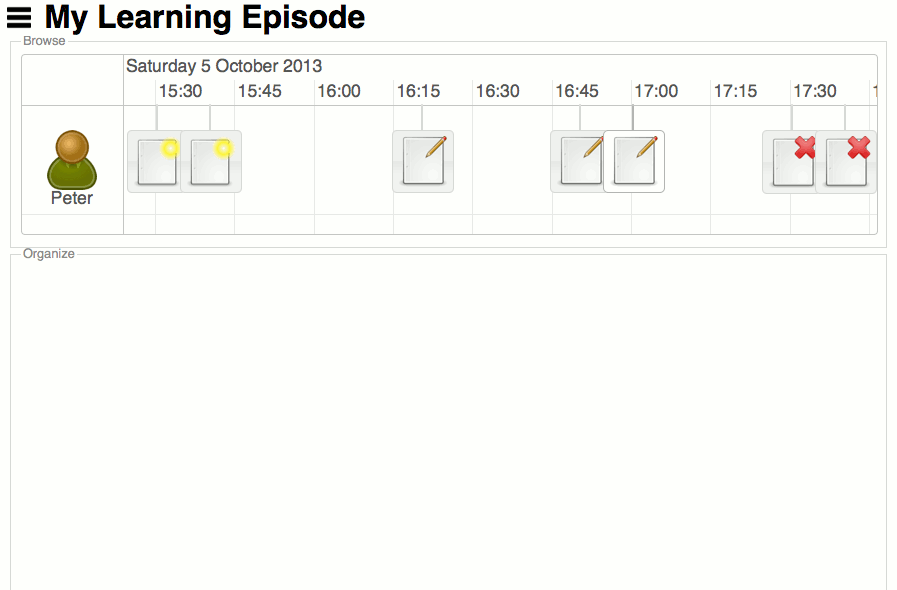
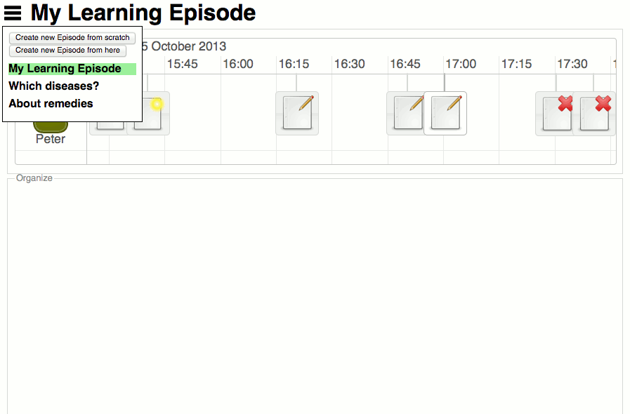
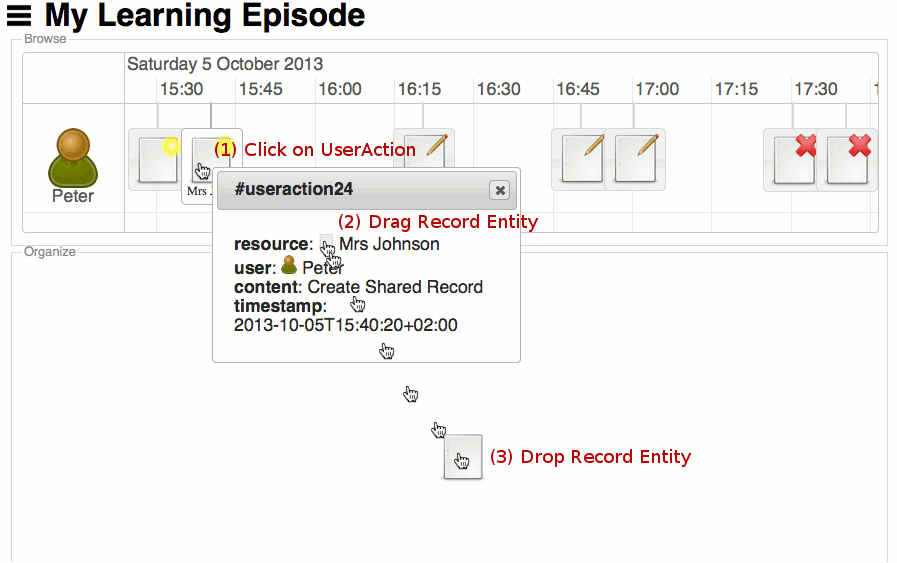
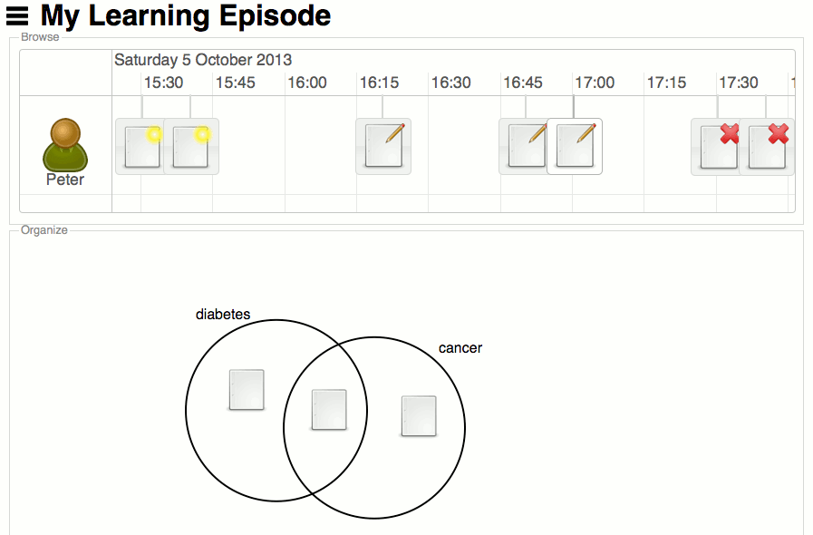

The sensemaking approach presented in this work is based on the design idea B&P introduced in the strand of the EU project Learning Layers1 (Tomberg et al., 2013). This section deals with the B&P framework design and relates it to the qualities of sensemaking.
In order to reflect the bipolarity of sensemaking the B&P user interface consists of two types of view components (widgets) displayed in two vertically arranged canvases. The upper canvas is reserved for widgets which enable users to browse (forage for) their digital artifacts along contextual cues (eg. time, location, topics) whereas the lower canvas gives space to widgets for organizing these items semantically.

| Figure 1.1: | The wireframe (presented here by courtesy of Vladimir Tomberg) of the B&P user interface with two canvases, one for browsing data, one for organizing them. The current widget in either canvas can be switched by the arrow left and right. |
Whether a tool for sensemaking is appropriate mainly depends on the context, eg. the kind of data, the specific goal, the user’s personal preferences, and so on. Furthermore, as the data represent informal learning experiences they can not be defined by a certain type or structure. On the one hand they may vary in their intrinsic properties (textual notes, photos, audio records, etc.), on the other hand in their extrinsic ones (creation time, location, relation to other items etc.). Hence, the design envisions the contents of both canvases to be switchable over an extensible set of widgets dynamically and independently in order to find the appropriate ones to visualize and interact with the data at hand.
Both the division into two canvases and the dynamic switching feature account for reciprocity of sensemaking. First, the organize canvas can be used to build up representations based on the data in the browse canvas whereas the browsing can be guided by representations present in the organize canvas. On the other hand, switching of widgets also allows for the reciprocal interchange of top-down and bottom-up processes as widgets as a whole can be seen as a representation of data, be it a browsing widget or an organizing one. Given the widget seems unsuitable for the data, the user can switch (shift) it. Additionally reciprocity can be supported by recommender systems suggesting further data given a representation (or a widget) as well as suggesting a representation (or a widget) given a data set.
As sensemaking is enactive, the interface needs to yield interactive affordances. Therefore our design enables users to interact with each visible element. Generally, items can be dragged and dropped from the upper to the lower canvas and each item can be clicked on demand for detail information. Furthermore, the design suggests a couple of specific widgets for each canvas each being interactive respectively. On the one hand, for instance, the timeline widget for the upper canvas can be panned and zoomed, on the other hand the lower canvas may contain an organizing widget for drawing rings and arranging items like in a Venn diagram.
On account of the episodic and heterogeneous nature of informal learning (Eraut, 2004), users need to be able to separate sensemaking according to different learning needs and easily switch between them. Hence, the label of the current learning topic is displayed in the header of the application. Via a dropdown menu new topics can be created and switched to quickly provide anchors to the corresponding sensemaking states. Due to sensemaking’s quality of continuity users may cease sensemaking as soon as they see their task-specific goal achieved (Russell et al., 1993) or may come back later. Therefore, these sensemaking states need to be persisted continuously at runtime.
Summing up, the corner stones of our design are the following, each tackling a specific quality of sensemaking:
The individuality of sensemaking is covered a priori as informal learning experiences are personal per se. Reification is not considered in the design as such as this quality is a matter of data and hence can not be represented on the level of design.
The following non-functional requirements are direct implications of the corner stones of our design. As our approach goes for a generic framework we exclude functional requirements here which are specific to concrete sensemaking tasks and have already been elaborated by others (Gotz, 2007; Ryder and Anderson, 2009; Paul and Morris, 2009; Horng et al., 2011).
These requirements have some technical consequences. If widgets have to be independent modules there needs to be a common means of data exchange in order to enable communication with the framework and inter-widget coordination. However, the type and structure of data can not be defined a priori and thus a common data format either. Hence, a graph-like database is necessary as it does not impose any pre-defined structure apart from nodes and links. Furthermore, graphs can represent reification which is also a quality of sensemaking.
The implementation of the prototype is split into two parts. On account of the generic requirements described above a framework for use case agnostic features was developed. The framework is intended to ease the implementation of application specific widgets which can leverage the modularity, responsiveness and serializability provided. The main part of this section is concerned with the framework implementation. As an application two widgets of the Bits and Pieces design idea have been developed on top of this framework.
The framework relies on the runtime environment of web browsers. The decision to use the web browser as the application platform has several reasons. First, as the Bits and Pieces framework aims to facilitate sensemaking on the web, the web browser itself renders the runtime enviroment for this purpose. Second, HTML52 together with CSS33 provides a feature rich framework for structuring, integrating and presenting multimedia content. It comes as the W3C web standard implemented across various web browsers. Third, web applications running natively in the web browser relieve users from awkward installation requirements. Furthermore as web browsers are pre-installed on nowadays operating systems such applications let users step into their sensemaking process free from technical barriers related to software.
JavaScript is the programming language commonly used for web application programming. On top of the browser’s runtime environment, it deals with the aforementioned requirements out of the box. As for the common interface for inter-module communication, the events API of the Document Object Model (DOM)4 can be used to trigger and listen for application wide events which allow to transmit data objects between modules. The same mechanism enables interactivity as user initiated events (eg. a mouse click) can be captured and processed further. Asynchronous outbound communication is provided by the ”Asynchronous JavaScript and XML (Ajax)”5 technique. The DOM tree, ie. the hierarchical HTML5 structure of the user interface elements, offers fine-grained access to the presentation layer as visual elements can be addressed and updated directly. Most importantly JavaScript is a dynamic scripting language which needs no compilation of its sources. Hence objects can be extended by additional properties at runtime which is especially handy in the given case of unstructured data.
However, these are low-level features of the language which are delicate to use in a productive environment. For instance, the manipulation of the DOM tree, the handling of events and the invocation of Ajax calls requires a considerable amount of code for relatively simple tasks. Moreover, there is no communication channel like the DOM events for JavaScript objects and understandably the language does not ship with a graph database. For these reasons, a couple of open-source JavaScript frameworks have been used to ease the prototype development.
Backbone6 consists of four concepts which are relevant for the prototype. Web developers can extend Backbone.Model which bundles logic for creation, access, alteration and deletion of objects. Backbone.Collection is needed for logic at the level of collections of models, for instance retrieval, addition and removal of objects. Models can be bound to a Backbone.View , which cares for the presentation in HTML5. A view also keeps a reference to the DOM element where it puts model data to. Moreover, Backbone enriches models and collections with an event mechanism similar to DOM events. For instance, a view can listen to changes to a model and trigger the appropriate functions to redraw the associated DOM element. A collection also fires events in the case of any operations invoked on it, eg. when adding a new object. Additionally Backbone.Model provides a generic API for synchronizing data with external sources.
For the interaction with the DOM JQuery7 provides a high-level API on top of JavaScript to simplify the traversal of the DOM tree, the retrieval of specific DOM elements and thus their manipulation. It also reduces the amount of code for the binding and unbinding of event listeners to the DOM which is needed by the prototype for the inter-widget communication. Furthermore JQuery plugins can be used to get common user interface concepts like dialog boxes and drag and drop interactivity working with little effort.
VIE8 is the so-called semantic interaction framework which brings together Backbone and the semantic web (Grünwald and Bergius, 2012). As the re-implementation of a graph database in JavaScript would neither be feasible nor high-performing VIE offers an entity-centric view of the semantic data based on JSON-LD (see 1.2.2). On top of Backbone it mimics a graph database by implementing VIE.Entity as the only type of Backbone.Model and storing all entities in a VIE.Collection which is a type of Backbone.Collection. Every property of an entity is a URI and any entity can be retrieved from the collection by its subject URI. VIE enables developers to build interactive web applications on top of semantic data.

| Figure 1.2: | JavaScript frameworks in use and how they interplay: VIE represents a graph data structure via inter-referenced objects of VIE.Entity, which is an extension of Backbone.Model. All objects are kept in VIE.Collection and can be connected to a Backbone.View which leverages JQuery in order to render the browser content. |
The B&P framework separates the concerns for remote services, data and presentation in a three-layered architecture. The service layer wraps remote web services and prepare external data sets. The data layer curates the collection of entities of the application. It keeps references between entities consistent to adaptable data integrity constraints and bundles data loading and creation logic. The presentation layer consists of one or more views which build up the user interface from the entities given, leveraging Backbone’s declarative event handling mechanism.

| Figure 1.3: | The B&P framework architecture: The service layer wraps remote data services (eg. the Social Semantic Server) to the data layer, ie. its data modules, which curate the entity collection. Views are bound to entities and propagate changes in the data to the user frontend. Users may generate content via external systems, eg. EVERNOTE, which can be fed back into the remote data service. |
In general, the service layer provides a uniform interface for loading, saving or analyzing content. This layer is part of the VIE framework and consists of adapters for various external web services, eg. for Open Calais9 or Apache Stanbol10 (Westenthaler and Grisel, 2012). Remote services are called asynchronously through the aforementioned Ajax technique, which means that the application continues running without waiting for the response from the server. However, utilizing the JQuery Deferred Object11 a service call can be created with callback functions to be executed at certain events during its runtime, for instance in the event of a successful or a failed response.
The data layer is organized in modules each handling an aspect of the application data. Modules may trigger data operation on each other to the extend of their inter-dependency. For instance, application specific data modules for a hierarchical data model can listen to certain entities being added to the entity collection and trigger the loading of its child entities.
The VIE framework provides the data layer with utility functionality for dealing with semantic data. As all entities are of the type VIE.Entity and kept in a single VIE.Collection (see fig. ??) they are subject to VIE’s semantic utility framework. For instance, an entity can be retrieved either by its URI or its CURIE which is a concatenation of a local namespace prefix with the entity specific part of its URI. Moreover, given a type hierarchy VIE can localize an entity’s type URI within that hierarchy.
Due to the service layer’s asynchronous nature the data layer keeps application data coherent and synchronous with the presentation layer which needs to serve immediate response to the user despite time-consuming asynchronous service operations. For instance, in the case of loading entities the data layer may provide the presentation layer with preliminary mockup data which function as a placeholder for the real entities being loaded through the service layer. In the case of the creation of an entity the data layer may create a representation of it which exists merely on the client-side by giving it a blank node URI of the form _:bNwith a N being some serial number. As soon as the service layer hands back the response of the server-side creation of the entity containing its real URI the data layer should update the client-side representation. See fig. 1.2.2 for an illustration of this data flow.

| Figure 1.4: | Data flows between layers for creating and changing an entity. Both flows are initiated by the user, processed by the presentation layer and handed over to the data layer. In the first flow the new entity is created as a blank node on while the service layer saves the entity to an external web service asynchronously. In the second flow changes made to the entity have to be queued by the service layer since the URI is not available due the delayed response from the web service. However, this delay is not visible to the user. |
The core component of the data layer is a data integrity module which other data modules may extend in order to impose integrity constraints on their data structure. For instance, having an entity with a relationship to another type of entity may be reflected by integrity constraint <relation1, TYPE, relation2>. Whenever an entity is added to the entity collection , the data integrity module will automatically check that the entity has a property named relation1 with the reference to another entity of type TYPEand vice-versa with relation2. If the constraint is violated it will be fixed.
A view in the presentation layer has to keep track of changes of entities which it is projecting to the visual HTML5 frontend of the user interface. Alternatively a view may also listen to new entities added to the entity collection and create new instances of subordinate views. Individual widgets can implement meaningful visualization techniques and interaction affordances on top of the semantics of a bit. The interface of the DOM tree provides fine-granular access to respective DOM elements for either manipulating its contents or listening for user events triggered upon it. According to Backbone a view also handles user input and hence takes the role of a controller to some extend. For instance, it is feasible to have a main view module which controls the instantiation of other views. However, as the views are not specific to the framework, view logic is up to the application specific development.
The framework leverages two essential standards from the sphere of Linked Data to enable the semantic interaction between the layers. The aforementioned VIE framework which is central to the data layer allows for flawless integration with external semantic web services through JSON-LD12 , a standard developed by the W3 Consortium13 . Building upon the JavaScript Object Notation (JSON) it introduces additional concepts in order to map keys of JSON objects to URIs and renders a serialization format for Linked Data (Lanthaler, 2013).
| Listing 1.5: | Example of JSON-LD, RDFa and respective triples: The @context object describes the mapping of homepage and name to URIs. These key/value pairs can be expressed in RDFa within HTML5, here framed by the namespace declaration vocab. |
Since the service and the data layer use JSON-LD for the representation of semantic data there also exists an equivalent for the presentation layer: RDFa14 , also a W3C standard15 which transforms concepts of RDF to XML, especially to HTML5. It enables web developers to markup contents of the document with semantic data and hence supports references of entities from the presentation to the data layer. This comes in handy for generally applicable user interface logic which merely operates on the DOM tree.
Listing 1.5 gives an example of both represenations and the triples expressed in Turle16 notation.
The framework described in the previous section was used to implement the essential parts of the Bits and Pieces design idea as an application of the framework. The upper canvas of the prototype contains the interactive timeline of a user’s actions. The lower canvas contains a graphical organize widget for drawing circles and arranging items which can be dragged and dropped either from the timeline or from the meta-data box which pops up on click. In the header of the application the label of the current learning episode is displayed. A dropdown menu offers the options to switch to another episode or to create a new episode. Fig. 1.6 depicts an example workflow.
| 
(a)
Initial
user
interface |
| 
(b)
Dropdown
box
listing
learning
episodes |
| 
(c)
Sensemaking
workflow |
| 
(d)
Finished
state |
| Figure 1.6: | The user interface of the B&P prototype: The upper canvas contains the timeline, the lower canvas the organize widget. Fig. (c): (1) User clicks on a user action displayed in the timeline to bring up the meta-data dialog box. (2) An entity referenced in the meta-data is dragged and (3) dropped in a circle of the organize widget. |
In the service layer, the prototype wraps remote RESTful web services of the Social Semantic Server (Kowald et al., 2013) which in turn mediates data from 3rd-party services, here Evernote (see fig. 1.2.2). As our architecture is not bound to a specific service, Osmosis would also be a possible service tool for data collection. The reason for choosing Evernote instead of Osmosis laid in the price and in the fact that Evernote covers even more functionalities to record informal learning experiences (e.g. speech to text).
There are several data modules, eg. UserData, EpisodeData, OrganizeData or TimelineData, each handling a certain part of the application data. The data layer is organized as follows: When a user entity is added to the entity collection, its episodes together with versions is loaded. For each version the widgets are fetched which in turn fetch their specific data, eg. user actions, circles or organized items.
The presentation layer consists of an AppView which prepares the upper and the lower canvas. As version entities with their widgets come in the AppView checks whether the version matches the reference stored in currentVersion of the user entity. Each version will get its representation in the DOM tree but only the current version element with its child widget elements is shown by toggling the CSS visibility property.
The TimelineView wraps chap-links-timeline17 , an external JavaScript library which creates the actual timeline component, and transforms entity data to the proper data format. The OrganizeView wraps another external application developed in the course of the Learning Layers Project which leverages SVG to draw the circles and icons. Using native DOM events this organize component communicates user-initiated modification of its contents to the application. OrganizeView captures these events and transforms the modified data to change operations on its entities.
Eraut, Michael (2004). “Informal learning in the workplace.” In: Studies in Continuing Education 26.2, pp. 247–273. issn: 0158-037X. doi: 10.1080/158037042000225245 (cit. on p. 8).
Gotz, David (2007). “The ScratchPad.” In: Proceedings of the 16th international conference on World Wide Web - WWW ’07. New York, New York, USA: ACM Press, p. 1329. isbn: 9781595936547. doi: 10.1145/1242572.1242834. url: http://dl.acm.org/citation.cfm?id=1242572.1242834 (cit. on p. 9).
Grünwald, Szabolcs and Henri Bergius (2012). “Decoupling Content Management.” In: developer track, WWW2012 Conference, Lyon (cit. on p. 14).
Horng, Duen et al. (2011). “Apolo: Making Sense of Large Network Data by Combining Rich User Interaction and Machine Learning.” In: Proceedings of the SIGCHI Conference on Human Factors in Computing Systems, pp. 167–176. isbn: 9781450302678 (cit. on p. 9).
Kowald, Dominik et al. (2013). “The Social Semantic Server.” In: I-SEMANTICS (Posters & Demos). Ed. by Steffen Lohmann, pp. 50–54 (cit. on p. 33).
Lanthaler, Markus (2013). “Creating 3rd Generation Web APIs with JSON-LD and Hydra.” In: Proceedings of the 22nd International World Wide Web Conference, Rio de Janeiro. ACM Press, pp. 35–37 (cit. on p. 25).
Paul, Sharoda A. and Meredith Ringel Morris (2009). “CoSense.” In: Proceedings of the 27th international conference on Human factors in computing systems - CHI 09. New York, New York, USA: ACM Press, p. 1771. isbn: 9781605582467. doi: 10.1145/1518701.1518974. url: http://dl.acm.org/citation.cfm?id=1518701.1518974 (cit. on p. 9).
Russell, Daniel M. et al. (1993). “The cost structure of sensemaking.” In: Proceedings of the SIGCHI conference on Human factors in computing systems, pp. 269–276. isbn: 0897915755. doi: 10.1145/169059.169209 (cit. on p. 9).
Ryder, Brendan and Terry Anderson (2009). “’Coalesce’.” In: Proceedings of the 21st Annual Conference of the Australian Computer-Human Interaction Special Interest Group on Design: Open 24/7 - OZCHI ’09. New York, New York, USA: ACM Press, p. 289. isbn: 9781605588544. doi: 10.1145/1738826.1738877. url: http://dl.acm.org/citation.cfm?id=1738826.1738877 (cit. on p. 9).
Tomberg, Vladimir et al. (2013). “A Sensemaking Interface for Doctors’ Learning at Work: A Co-Design Study Using a Paper Prototype.” In: ECTEL meets ECSCW 2013: Workshop on Collaborative Technologies for Working and Learning, pp. 54–58 (cit. on p. 5).
Westenthaler, Rupert and Olivier Grisel (2012). “Automated linking data with Apache Stanbol.” In: developer track, WWW2012 Conference, Lyon (cit. on p. 20).